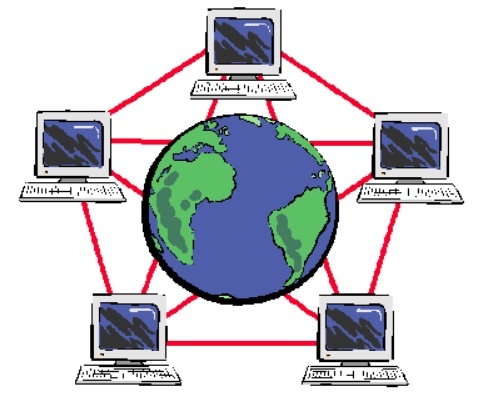

Пожалуй, в данный момент uTorrent является довольно удачным файлообменным софтом для Windows.
Скромно стоит в сторонке, ожидает в фоновом режиме, пока пользователь не соблаговолит скопировать ссылку на закачку.
А потом начинает эту самую закачку, показывая происходящее в своём нехитром, но довольно информативном интерфейсе.
(Впрочем, интерфейс у подобных программ схожий, ведь велосипед изобретать ни к чему.)
К тому же, программа uTorrent совсем крохотная, занимает на диске
всего лишь пару мегабайт. Однако устанавливается по сети (по крайней мере,
портативная версия) с помощью загрузчика. Видимо, из соображений безопасности,
чтобы по интернету не гуляли заражённые копии.
Основным недостатком всех торрент программ, в числе и uTorrent
это не стабильная скорость скачивания.
Скорость скачивания в первую очередь зависит от количества СИДОВ и ПИРОВ.
Чем их больше тем скорость выше. Но естественно, что скорость скачивания
в большей степени зависит от скорости вашего интернет - соединения и от
скорости интернет - соединения у Сидов и Пиров. Нельзя скачать файл из
пиринговой сети быстрее, чем позволит ваш интернет - провайдер
и провайдеры всех участников сети.
